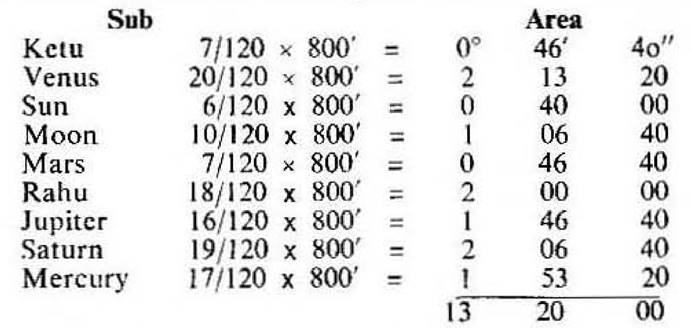
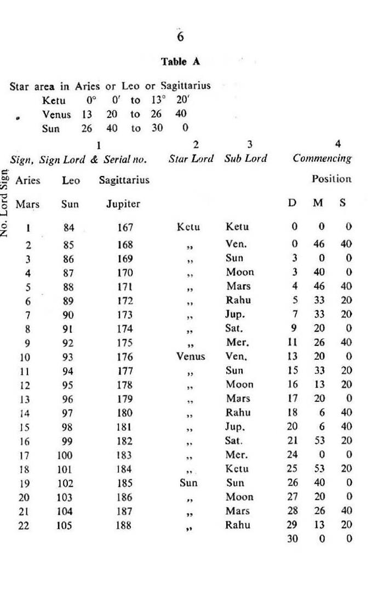
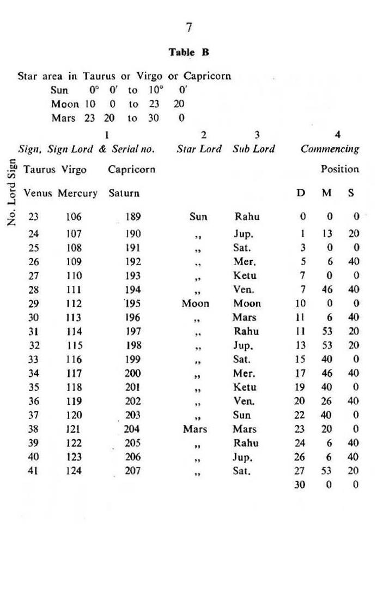
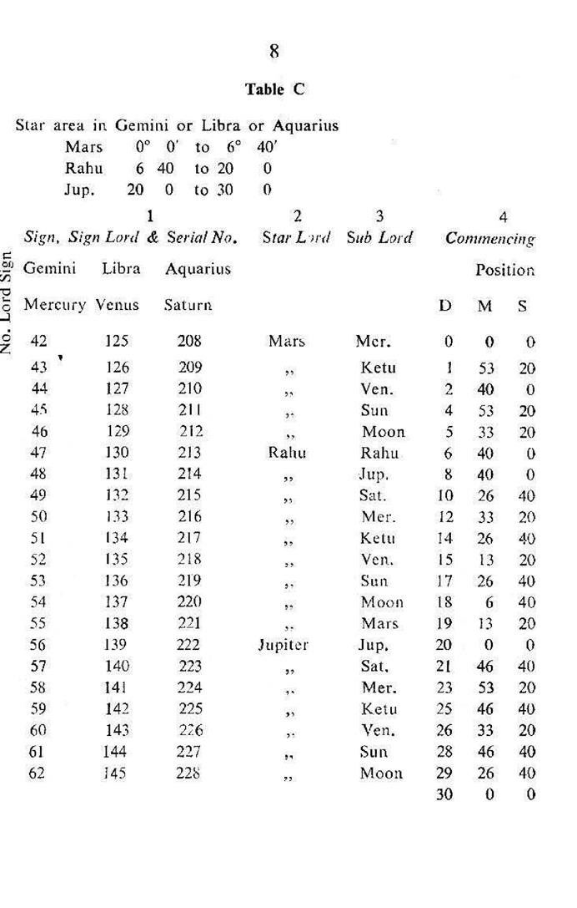
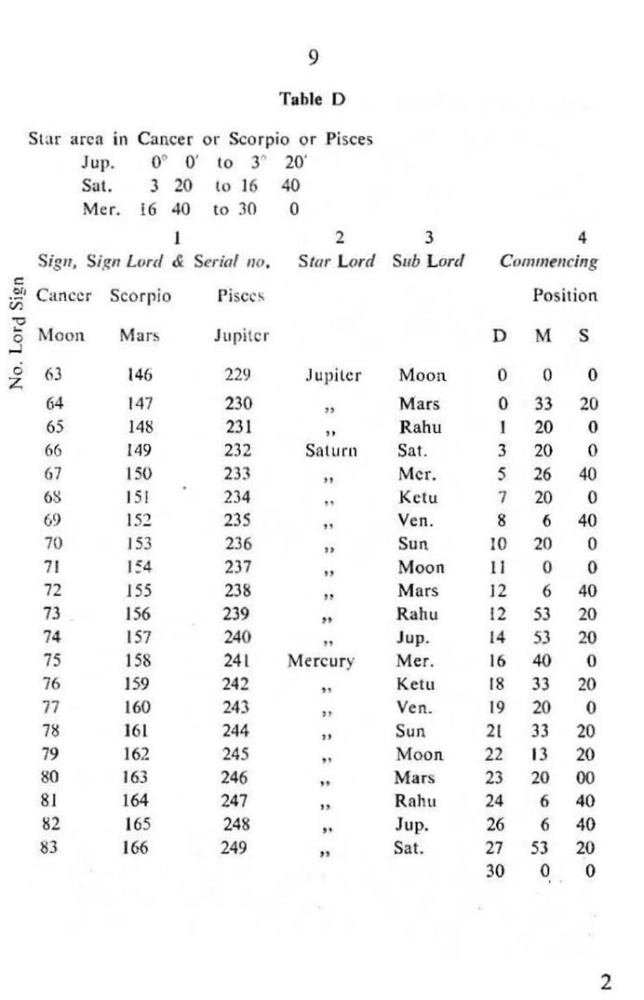
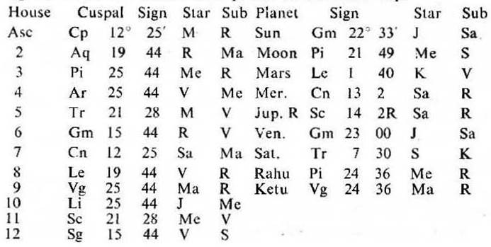

The Zodiac of 360° is divided into three equal parts. Each part contains 120°. It consists of nine equal Sections. Each section contains 13° 20' or 800'. It begins from 0° Aries. Each section is known as Nakshatra or Constellation or Star. There are 27 Nakshatras or Constellations or Stars in the whole Zodiac.
According to Vimshottari Dasha System each Nakshatra or Constellation or Star is ruled in turn by the nine planets in the order of Ketu, Venus, Sun, Moon, Mars, Rahu, Jupiter, Saturn and Mercury. This order is fixed and not changeable.
Each planet rules three Nakshatras or Constellations or Stars and the ruling planet is called the Nakshatra Lord or Constellation Lord or Star Lord. In short we may use the term ‘Star’ instead of ‘Star lord’ etc through out this book.
In Nakshatra system each Nakshatra or Constellation or Star is subdivided into nine parts. This Subdivision is called ‘Sub’. It is based on the following formula:
“Dasha year of each planet ÷ The total number of Vimshottari Dasha years × Star area = The longitude or extent or area of the Sub for each planet in any Star or Constellation or Nakshatra”
The planet ruling the longitude or extent or area of the ‘sub’ in any Nakshatra or Constellation or Star is called the Sub Nakshatra Lord or Sub Constellation Lord or Sub Star Lord or Sub Lord. In short we may use the term ‘Sub’ instead of Sub Lord through out this book.
The above formula of deriving the “sub” is illustrated as under:

The order of subs in each star is shown in the accompanying Tables A, B, C, and D, on page 6, 7, 8,and 9.
Each table shows the star lord and the sub lord for each degree of the Zodiac. The star lord is similar to the Dasha (period) Ruler, while the sub lord corresponds to the Sub-period Ruler.




The table A is meant for Aries, Leo and Sagittarius; the table B for Taurus, Virgo and Capricorn; the table C for Gemini, Libra and Aquarius and the table D for Cancer, Scorpio and Pisces.
In the beginning of each table the Star area of each planet in each sign is given e.g. in the table A Ketu star area extends from 0° to 13° 20′ in Aries or Leo or Sagittarius and in the tables B and C Mars star area extends from 23°20′ Taurus or Virgo or Capricorn to 6°40′ Gemini or Libra or Aquarius and so on with other star areas.
Each table contains four main columns. The column 1 contains Sign, Sign Lord & Serial no., Sign viz. Aries is written first. Sign Lord viz. Mars is marked below Aries. Serial no. viz. 1 to 22 is mentioned below Mars and so on with the other Sign, Sign Lord & Serial no..
The Column 2 shows the Star Lord. The Column 3 the Sub Lord and the Column 4 contains the commencing position of each Sub Lord in the Star area of each planet.
Example. In the table A in the Star area Ketu in Aries or Leo or Sagittarius the Sub of Ketu begins from 0° 0′ 0″ and ends at 0° 46′ 40″. So the Sub of Venus starts at 0° 46′ 40″, add 2° 13′ 20″ (Sub area of Venus) and you get the starting position of Sun Sub at 3° 0′ 0″, add 0° 40′ 0″ (Sub area of Sun), then the Sub of Moon starts at 3° 40′ 0″ in Aries or Leo or Sagittarius. Repeat this procedure and the commencing position for all Subs in each star in each Sign will be obtained.
249 Subs and their Serial no.s
27 stars have been sub divided into 243 subs, Refer to the Tables A, B, C and D; in six cases the same star and the same sub will be found in the adjoining signs e.g. Sun Star Rahu Sub in Aries or Leo or Sagittarius 29° 13′ 20″ to 30° (Table A) continue in Taurus or Virgo or Capricorn upto 1° 13′ 20″ (Table B).
Jupiter star Moon sub in Gemini or Libra or Aquarius 29° 26′ 40″ to 30° (Table C) continue in Cancer or Scorpio or Pisces upto 0° 33′ 20″ (Table D).
Take these six subdivisions into account and you will get 249 subdivisions in all. Thus the Zodiac is divided into 249 parts. Each part has been given a serial no.
In Aries the serial no. starts from 1 and ends at 22; in Taurus from 23 to 41; in Gemini from 42 to 62; in Cancer from 63 to 83 and in Leo from 84 to 105 and so on. Each serial no. mentions the sign, the sign lord, the star lord, the sub lord and the commencing position of each sub. The sign lord remains constant for the whole sign. These no.s are very useful in erecting horary maps. This will be discussed later on.
From these tables you can say that each degree and minute of the Zodiac is ruled by the sign lord, the star lord and the sub lord. In other words, it can be said that each degree and minute is jointly ruled, governed or operated by three planets, out of which one becomes the sign lord, the other is the star lord and the third is the sub lord.
For instance in the Table A the serial no. 6 shows that Aries 5° 33′ 20″ is jointly ruled or governed or operated by Mars (as the sign lord); by Ketu (as the star lord) and by Rahu (as the sub lord).
The serial no. 98 indicates that Leo 20° 6′ 40″ is jointly operated by Sun (as the sign lord), by Venus (as the star lord) and by Jupiter (as the sub lord).
The serial no. 187 denotes that Sagittarius 28° 26′ 40″ is jointly governed by Jupiter (as the sign lord), by Sun (as the star lord) by Mars (as the sub lord).
The serial no.s in the Tables B, C and D may be understood in the same way as explained above.
In this birth map the 11th cusp is Scorpio 21° 28′. Now refer to the Table D on page 9 and you will find that this cusp falls between 19° 20′ 0″ and 21° 33′ 20″. Hence it may be said that the 11th cusp Scorpio 21° 28′ is jointly ruled by Mars (as the sign lord), Mercury (as the star lord) and Venus (as the sub lord). To put in other words the 11th cusp is in the star area of Mercury or in the star of Mercury or in the star Mercury or in Mercury star. It is in the sub star area of Venus or in the sub star of Venus or in the sub star Venus or in the sub of Venus or in Venus sub. The other cusps and each planet may be understood from the Tables A, B, C and D in the same way.
The following table shows the star and the sub of each cuspal sign of 12 houses and of each planet in this birth map.
